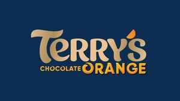

Trade Mark Journal No.2025/044 31 October 2025
WO0000001864934 (29,30)
Office of origin: European Union Intellectual Property Office (EUIPO)
Date of International Registration:13 May 2025
Date of designation in the UK:
13 May 2025

The mark contains the colours Midnight blue, orange and gold
- Class 29
- Preserved, dried and cooked fruit; fruit purées; jellies for food; jams; marmalades; compotes; dairy products; cow, sheep and goat milk; dairy substitutes namely almond milk, coconut milk, rice milk and soy milk.
- Class 30
- Sweets, namely, candy; non-medicinal confectionery, namely candy; cocoa confectionery, namely candy with cocoa; confectionery with cocoa substitute, namely candy with cocoa substitute; chocolate confectionery, namely chocolate candy; confectionery with chocolate substitute, namely chocolate substitute candy; sugar-based confectionery; confectionary with fruits and/or fruit-flavored or with plants excluding essences, namely candy, mainly based on sugar; chocolate tablets, bars, sticks, pocket squares and balls; solid or filled chocolate; chocolate truffles; praline chocolate confectionery, namely praline chocolate candy; chocolate bites; candy containing pieces of biscuits, cookies, wafers and crackers; chocolate chips; chocolate chips or small chocolate pieces; candy containing chips, slivers or small pieces of chocolate; chips, slivers or small pieces of chocolate for biscuits, cookies, wafers and crackers; chocolate bars; confectionery products in the nature of bars covered with chocolate.
CARAMBAR AND CO.
Representative: NFALAW, 155 boulevard Haussmann, F-75008 PARIS, FRANCE